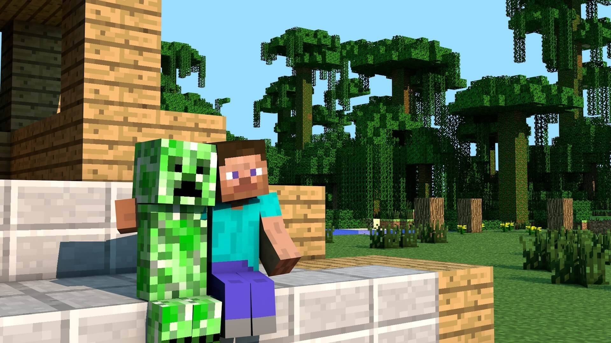

Minecraft <3
Minecraft <3

En esta imagen podemos observar a Steve el protagonista, junto con el creeper uno de los principales mobs del juego.
La primera version del videojuego fue lanzada en 2009 por Markus Persson (Notch) para relanzar su empresa Mojang, casa matriz del videojuego.
La version original de Minceraft se desarrollo y se libero en tan solo en 6 dias, sin embargo, no estuvo completo hasta la version liberada en 2011.
La existencia del Creeper en el videojuego fue ocasionado debido a un error, el creador estaba diseñando un cerdo y por error las dimensiones no fueron las apropiadas.
Minecraft cuenta con una edicion educativa, la cual puede ser utilizada por los maestros en las aulas de clase para asignar proyectos a los estudiantes.
El videojuego se convirtio en una asignatura obligatoria en el instituto Viktor Rydberg, de Estocolmo desde el 2013 para los estudiantes mayores de 13 años.
Hasta el 2014 Mojang fue una empresa independiente con crecimiento agigantado gracias a la fama del videojuego, actualmente el estudio pertenece al gigante de la industria Microsoft.
A la fecha de hoy Minecraft se encuentra en el primer puesto de los videojuegos mas vendidos de la historia seguido por GTA V (2013) y Tetris (2006).
El videojuego cuenta con mas de 230 millones de copias vendidas en sus distintas plataformas hasta el dia de hoy (2022).
Si tienes tiempo te invitamos a conocer mas datos interesantes de este increible juego de mundo abierto llamado
Minecraft.